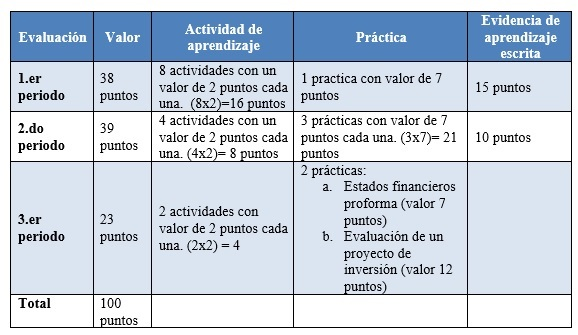
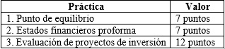

La Unidad de Aprendizaje de Administración Financiera se evaluará con el desarrollo de 14 actividades de aprendizaje, 6 prácticas y 2 evidencias de aprendizaje escrita, las cuales tendrán la siguiente ponderación:  La unidad temática III, que se aborda en el tercer período de evaluación se evaluará con las siguientes prácticas:  Para resolver las prácticas interactúa con el sistema de apoyo didáctico para la planeación financiera, analiza los resultados obtenidos, plantea y evalúa alternativas de solución en diferentes escenarios y finalmente argumenta la toma de decisiones.